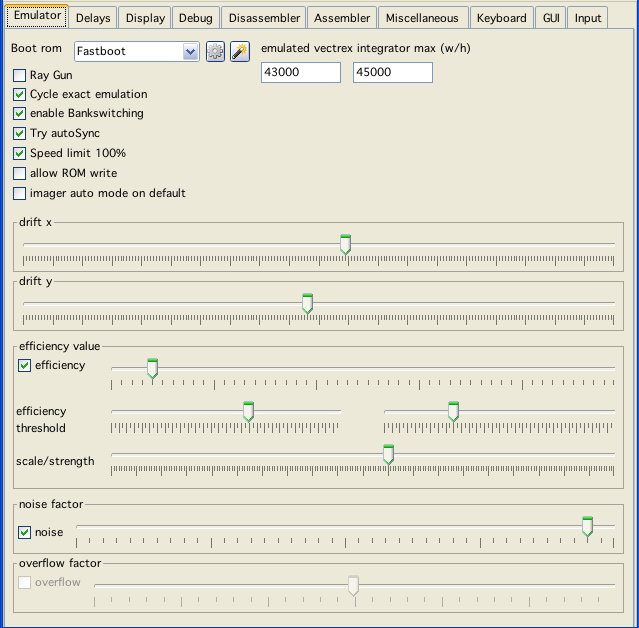
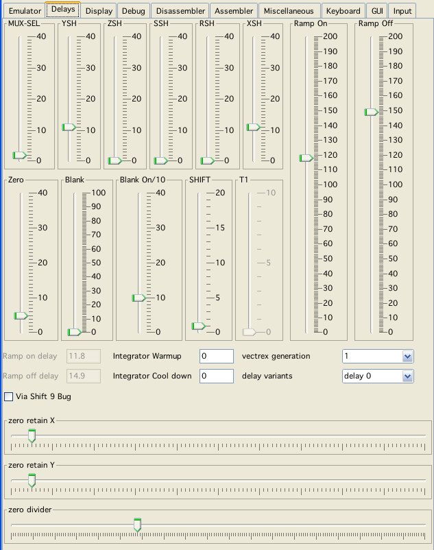

Vide is some kind of a Monster!
I know that.
Due to Vide being 100% pure java and trying to emulate vectrex as precisley as I am knowledgable to - Vide can become slow as hell.
I know that I still am not able to emulate the old brute 100% - but god knows I have put much effort into the emulation - and I am quite certain that at the time beeing - emulation in VIDE is the most exact vectrex emulation around.
Always depending on the options you have chosen. Here some descriptions of what is emulated, and how you may alter emulation with configuration:

emulator config
Boot Rom
Select the Rom you want per default use as your vectrex BIOS. The nearby buttons allow to configure the BIOS settings for each available ROM.
emulated vectrex integrator max (w/h)
Easily formulated, what resolution of the vectrex should be emulated. The integrator coordinates are measured roughly as "time * draw strength". Where "draw strength" is the dac value put to the integrators (ranging from -128 to +127). Time naturally can become quite large. The largest by the Vectrex BIOS supported time is $ff (cycles), thus a "natural" resolution might be chosen as: -32768 - +32767. But chosing a higher resolution is necessary for some carts because:
theoretically time can be quite a bit larger
vectors are added, so adding two vectors, can again be larger than the above value.
The default values (41000) seems to be pretty close to actual vectri. Although the display is vertically larger than horizontally - for internal "coordinates" this does not matter.
Ray Gun
Experimental start:
To not "collect" vector data and do a draw when a vector is finished, but to draw on each cycle the current beam position! This was implemented, but probably won't be finalized. The raygun is shot at the display panel, each emulated cycle, with the information:
old position
new position
speed (or dwell time, however you would like to look at it)
color
isCurved
The display routine is responsible to draw the positioning information. The idea was, that color, speed and position can be used to enhance brightness of the display. If a point has its color "full" (255), than it should spill further coloring to neighbouring pixels.
The thing is, doing a "simple" draw right now without any further evaluation and "spilling" is already really slow (which is not really suprising either).
Cycle exact emulation
Most of the time you do not need this setting. It costs a little bit of emulation time.
What it does: Hm...
Basically it handles emulation cycle exact, yes I know you gathered that from the name. With this option switched on analog hardware is emulated EVERY cycle. Not just at the end of each 6809 instruction. An instruction of the CPU can take anything from 2 to dunno 20 cycles? If RAMP, Shift or timers change in the middle of a CPU instruction and this is not handled at exactly the time, the output of the emulator can differ from the real machine - but this is most of the case only true if you try squeezing optimization out of the last pore of vectrex.
Enable bankswitching
Well just what it says. Emulator may perform a tiny little bit better if switched off, since some testing will be omitted. Barely - if at all noticable.
Try autosync
Nearly all vectrex programs have a different screen "refresh" rate. If you just emulate with a fixed frame sooner or later the screen flickers like mad. With this option switched on, the emulator trys to sync display with Timer T2 of vectrex, which is usually used to also sync vectrex display (WaitRecal). If Vide thinks this is not working it steps back and syncs to aproximately 50Hz - but this may result in vectrex screen flickering.
Speed limit
Limit the speed of emulation to given percentage of a real vectrex.
allow ROM write
Whether to allow cartridges "in general" to write (overwrite) cartridge memory - which is bad.
Imager auto mode on default
State of the imager emulation, see "Cartridges→Emulation: Imager 3d"
Drift
Nearly all vectri drift in one way or another. Drift is the slight "movement" of vectors over time without the user or programm actually changing anything. This has to do with electronic laws, old analog hardware, probably temperatur, humidty and so on. The default values represent my "no buz" vectrex.
Efficiency
I don't know if this is a "real" thing. In some desperate move to find a faulty behaviour, I implemented this. Basically what it does is "reduce" efficiency of the integrator Sample/Hold value the higher the absolut value of the current integrator already is. This e.g. (extreme example):
adding SH 100 to an integrator with a value of 0 will result in the integrator having a value of 100
adding SH 100 to an integrator with a value of 10000 will result in the integrator having a value of 10090
This is
either a real thing and correct
not - but the curved screen of the CRT has a similar effect,
Anyway it seems that adding "efficiency" might be correct either for a) or b) reasons.
efficiency threshold
Efficiency threshold calculates in laymans terms "at what" integration value the "degrading" of the summarizing kicks in. Default values roughly like my own vectrex (it usually kicks in wayout of the visibity range).
scale/strength
See "Programming the Vectrex→Findings→differences in "weight" (scale and strength)".
noise factor
Experimental! With this I try to emulate the "wobble" effect, if the integrators are not "resetted" often enough. Does not work well and is implemented wrongly I think. Best leave the switch to off.
overflow factor
Experimental!
And I think wrong, this will be gone in the near future

delay config
Delays seem to be quite important in exact vectrex emulation. As it seems the analog hardware does not react immediately to changes, but rather a short time span later. All delays that can be handled here are delays to analog hardware items inside vectrex.
To the best of my experiments - all default values represent my "no buz" new vectrex (serial number: 3117403).
MUX-SEL
A delay in CPU cycles the data written to the VIA bit 1-2 (Mux sel) is taking to reach (trigger) the MUX.
This setting was introduced while trying to get the same output in the emulator as the real vectrex, while displaying that raster graphics of the "lineart" demo.
YSH
A delay in CPU cycles the data "written" to the VIA ORA is taking to reach the YSH "analog storage".
I noticed, that usually the "sum" of YSH and MUX-SEL should be less than Ramp Off Delay.
ZSH
Implemented, but has no effect whatsoever.
SSH
Implemented, but has no effect whatsoever.
RSH
Implemented, but has no effect whatsoever.
XSH
A delay in CPU cycles the data "written" to the VIA ORA is taking to reach the XSH "analog storage".
ZERO
A delay in CPU cycles the data "written" to the VIA CA2 is taking to reach (trigger) the ZERO (grounding the integrators).
This setting was introduced after some other settings and watching the "sd.bin" demo of Christopher Tumber. The shots Christopher is firing set the Zero flag very VERY early (actually while the shot should still be in the "air"). On a real vectrex this works ok, my guess is - because a delay.
Blank delay
Implemented, but as of yet no use found! But nice effects if you use the slider :-).
Blank On Delay
(1/10 cycle) Implemented, but as of yet no use found!
SHIFT
A delay in CPU cycles between writing/reading the shift register of via and the actual start of shifting, I think this should be more or less a fixed "2".
T1
A delay in CPU cycles between starting the timer programatically and the actual starting of the timer t1 via internally. I switched this off, since any value other than 0 or 1 seem to be grossly false. (exact timing based programs, e.g. serial communication with a vecvoice does not work anymore - so my guess is that this is not a setting that should be toyed with)
Ramp On/Off Delay
These delays seem to be the MOST important delays in exact emulation. I don't know why, and I find it strange that On/Off is different - but experiments showed, that these values DO differ. The ramp delays are 1/10 cycle exact - and believe me, you even see the difference on screen for 1/10 cylce, which is 1/15,000,000 seconds worth of emulation!
Integrator Warmup
Implemented, but as of yet no use found (1/100 cycle exact)!
Integrator Cool down
Implemented, but as of yet no use found (1/100 cycle exact)!
Vectrex generation
To my knowledge there are at least 3 different versions of vectrex hardware. It seems to me, that at least in my two vectri there are different DACs used. This can be seen by sample programs which try cycle exact DAC settings (usually with DAC changes while RAMP is enabled). Therefor → the "generation" setting hides in reality a DAC-Delay which seems to be different for these generations.
I have not tested this extensivly, but implemented is a fixed DAC delay of 2 cycles for 3. generation, and 4 cycles for 1-2 generation (and none for "Off"). The volume of generated sound for digitized music seems to be reduced on new vectri.
Also... the generation (or the actual VIA) influences at what value via "stall" when shiftreg is updated befor the magic 18 cycles (off never stalls).
Via Shift 9 Bug
In general you will not see a difference in your programs if you switch this on or off. The Vectrex programmers EXPECT the Via shift 9 bug to be present and thus programmed handling it into the programs (raster display/text routines). This is why there is a "magic" 18 cycles time in all those routines (instead of a "magic" 16). So even if the bug is not emulated all those routines are timed to 18 cylces and the now NOT emulated bug (the 9th additional shift) does not take place, but not taking place looks for 18 cycles exactly the same as taking place, since CB2 STAYS at the last set value after a shift cycle.
If 9 Bug emulation is off and you program 16 cycles raster routines - you can see the difference - but you probably won't do that...
Delay variants
The name (probably falsely) derives from a vectrex feature I credited to the VIA. I thought via was built with different timing "variants" in relation to the shift register (see: "Programming the Vectrex→Findings→differences in "Delay of SHIFTREG"). I don't think that is "true" anymore.
With these settings you can set the ramp on/off values to predefined values that emulate the described variants (wherever they actually resut from).
I am still not 100% certain, that all these delays are correct emulations or are just a lucky hunch which looks like they works - but rather I should be fiddling with something entirely different. I tried many different things - but nothing else comes close to these results - so take them - or find something better :-)! (end tell me!)